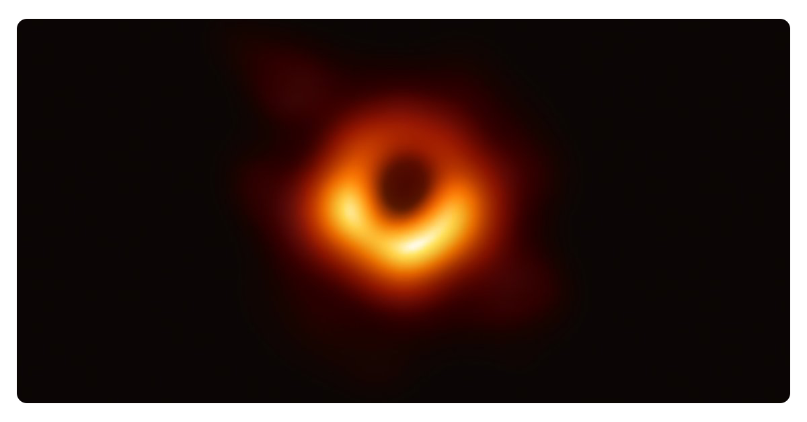

SONSUZLUĞA, DERİNLİĞE, MERAKLA...

Hepimizin Astronomi ve gökyüzü hakkında öğrenmek istediği konular vardır. Örneğin gezegen nedir? Ay niçin bize aynı yüzünü gösterir? Satürn gezegeninin niçin
halkası vardır? yıldızlar bizden ne kadar uzaktalar? gibi. Hayallerin ötesine, var olanın daha ilerisine gitmek, keşfetmek, incelemek, her insanın hayalidir. Kilometrelerce yolları gidebiliyorken, milyonlarca
yolu gitmek mümkün müdür? Yıldızlara dokunabilmek acaba mümkün müdür? Gezegenleri top gibi yuvarlamak mümkün müdür? Uzayın derinliklerine ve keşfedilecek daha çok şey için yola çıkmaya
hazır olun. Hayallerimde yaşadığım sonsuz düşünceler; neyin nereden geldiğini, ne şekilde gerçekleştiğini, ve en önemlisi de nasıl oluştuğunu hep kafamın bir köşesinde yer edinmiştir. Bu düşüncelerimin
gerek bilimsel gerekse kendi çalışmalarım sonucu ulaştığım bilgileri, Gökyüzünün ve Astronominin eşsiz özelliklerini, Uzayın derin boşluklarını ve gizemlerini sizlere en iyi şekilde paylaşmak için
buradayım.
Yıldızları öğrenmek, gözlemlemek ayrı ve güzel bir hobidir. Her birinde, Carl Sagan’ın da dile getirdiği gibi ayrı bir düş, ayrı bir tarih ve ayrı ayrı güzellikler bulursunuz. İçerdikleri
galaksiler, bulutsular ve sonsuz sayıda gökcisimleriyle bize yine ne kadar küçük olduğumuzu, aynı anda ne kadar değerli ve değersiz varlıklar olduğumuzu hatırlatırlar. Elbette tüm bunları takımyıldızlarında
görebilmek için, bir tutam "düş" gerekebilir. Gökyüzünüz açık olsun.
Astronomi ve Uzay Bilimleri ile ilgili merak ettiğiniz konuları bize sorabilirsiniz. Okuyucularımızdan çoğunun ilgisini çeken konulara yer vermeye çalışacağız.
|
|